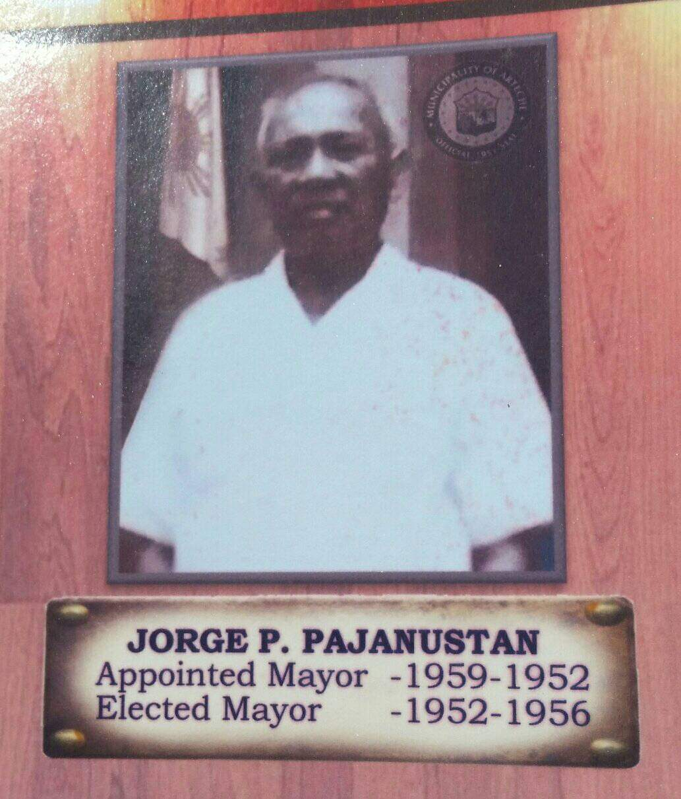

The first Mayor will come from among the crop of active and civic-spirited leader in the locality. It was Hon. Jorge Pajaroja Pajanustan, Sr. who gloriously served for two (2) consecutive terms, a total of eight (8) years. Mayor Pajanustan initiated the construction of the Arteche port and basic offices like Revenue Office and the municipal Police Station made from light materials.
